Шаг 1: подготавливаем морковь.
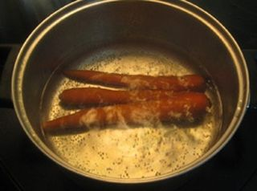
Тщательно промываем неочищенную морковь под проточной водой и выкладываем в небольшую кастрюлю. Заливаем емкость обычной холодной водой так, чтобы она полностью покрывала овощ, и ставим на средний огонь. Когда вода закипит, делаем огонь меньше среднего, накрываем кастрюлю крышкой и отвариваем корнеплод в течение 20-40 минут в зависимости от его размера. Внимание: готовность моркови лучше всего проверять вилкой. Если она легко входит в овощ, то можно его доставать из кипящей воды, чтобы не переварить. По истечении отведенного времени выключаем конфорку, а компонент перекладываем с помощью вилки на разделочную доску.
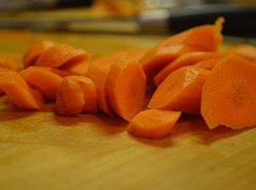
Когда он станет теплым, ножом отрезаем стебель и удаляем мягкую шкурку. Нарезаем морковку небольшими кубиками и перекладываем в свободную тарелку. Внимание: по желанию морковь можно измельчить на крупной терке.
Шаг 2: подготавливаем яйца.
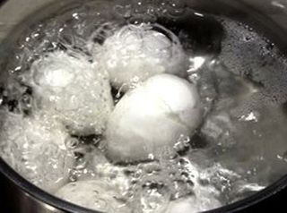
Выкладываем яйца в свободную небольшую кастрюлю и заливаем их обычной холодной водой так, чтобы жидкость полностью покрывала компонент. Ставим емкость на средний огонь. Когда вода закипит, делаем огонь меньше среднего и варим яйца вкрутую в течение 10 минут. Сразу же после этого выключаем конфорку, а емкость с помощью кухонных прихваток переставляем в раковину. Включаем на полную холодную воду, чтобы яйца могли в ту же секунду охладиться. Таким образом, мы с легкостью снимем с них скорлупу, не повредив вареный белок.
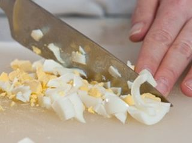
Выкладываем очищенные яйца на разделочную доску и мелко рубим кубиками. Обработанный компонент перекладываем в свободную тарелку.
Шаг 3: подготавливаем лук.
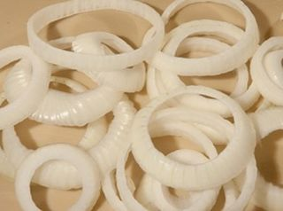
С помощью ножа очищаем лук от шелухи и тщательно промываем под проточной водой. Выкладываем овощ на разделочную доску и нарезаем кольцами.
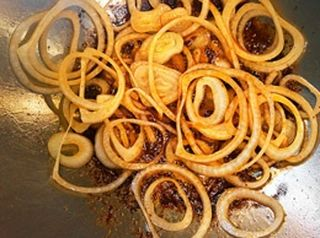
Тем временем ставим на средний огонь сковороду с небольшим количеством растительного масла. Когда масло хорошо разогреется, делаем огонь меньше среднего и выкладываем в емкость кольца лука. Время от времени помешивая их деревянной лопаткой, обжариваем до нежно-золотистого цвета. После этого выключаем конфорку, а лук перекладываем в чистую тарелку.
Шаг 4: подготавливаем филе кальмара.
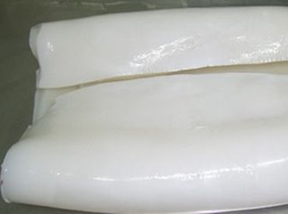
Филе кальмара выкладываем в тарелку и отставляем в сторону, чтобы оно разморозилось до комнатной температуры. После того, как морепродукты станут мягкими, тщательно промываем их под проточной теплой водой.
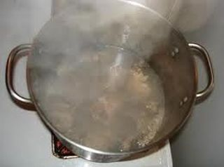
Ставим на средний огонь свободную кастрюлю с обычной холодной водой и накрываем емкость крышкой. Когда вода закипит, добавляем в емкость немного соли, все хорошо перемешиваем столовой ложкой и после - аккуратно выкладываем филе кальмара. Внимание: необходимо проварить компонент не более 2-х минут, иначе он станет жесткий и невкусный. Сразу же по истечении отведенного времени выключаем конфорку, а содержимое кастрюли, придерживая ее кухонными прихватками, переливаем через дуршлаг в раковину.
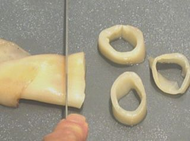
Когда вода полностью стечет, а кальмары слегка остынут, перекладываем их на разделочную доску. Теперь с легкостью ножом снимаем пленку и нарезаем морепродукты тонкими кольцами или соломкой. Измельченный ингредиент перекладываем в чистую тарелку.
Шаг 5: подготавливаем капусту.
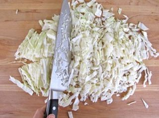
Капусту очищаем от огрубевших листьев и промываем под проточной водой. Выкладываем овощ на разделочную доску и, воспользовавшись ножом, тонко рубим соломкой. Внимание: по желанию капусту можно натереть на крупной терке. Измельченный компонент перекладываем в среднюю миску, слегка солим его и отжимаем чистыми руками, чтобы он смог дать сок.
Шаг 6: готовим салат «Морской царь».
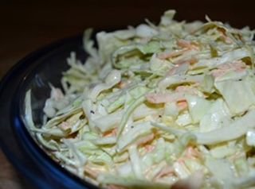
В глубокую миску выкладываем все измельченные ингредиенты, добавляем майонез и, воспользовавшись столовой ложкой, все тщательно перемешиваем до однородности. После этого перекладываем салат в салатницу и по желанию посыпаем мелко рубленой зеленью петрушки. Внимание: блюдо не нужно настаивать, а можно сразу же подавать к обеденному столу.